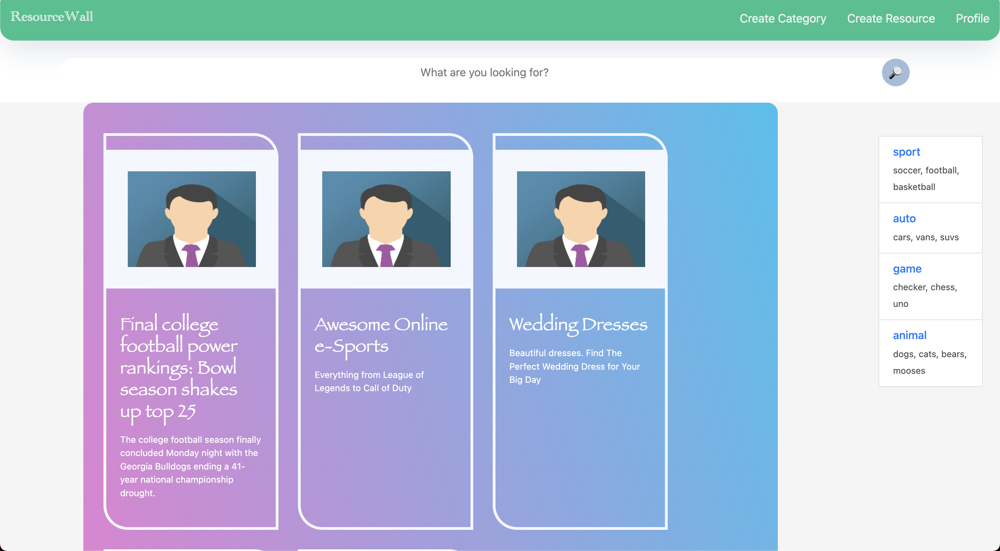
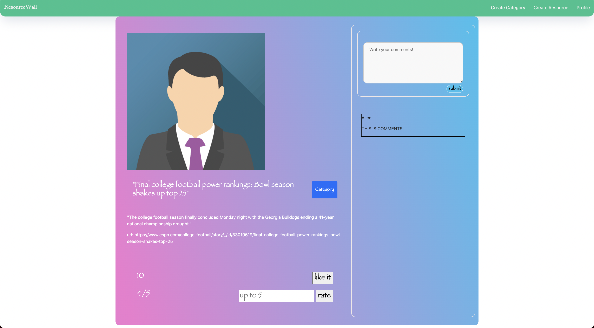

Task_App
external resources library
Clon-code of Pinterest
This project is clone-code of Pinterest, where a user of this website can easily register and log in, and the user can see all the open contents posted by other users. If a user wants to save an external webpage or links, the user needs to press that button and can see all the resources from my profile.

When the user clicks a media content, it shows the detail of the contents -- it would include descriptions and URLs at the bottom of the image with the number of likes, ratings, and other comments.
this project is created using HTML, CSS, JavaScript, with node.js backend. I have created each router in js and ejs files, and used the PSQL database with example data pre-populated.